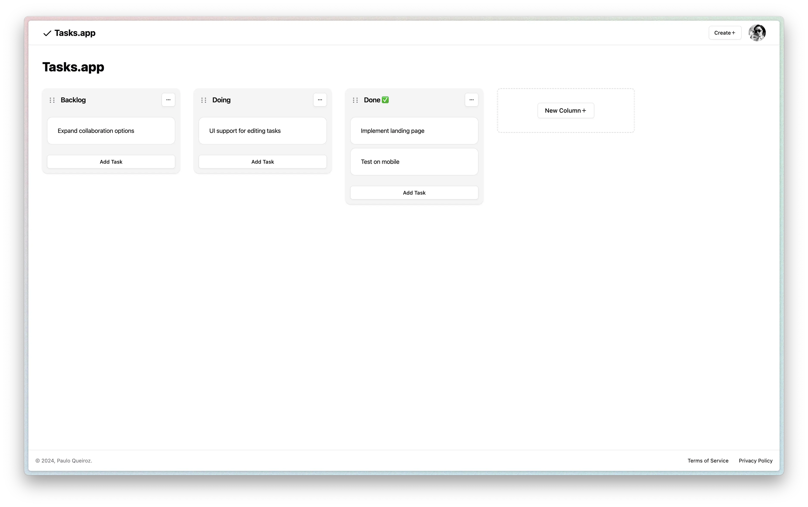
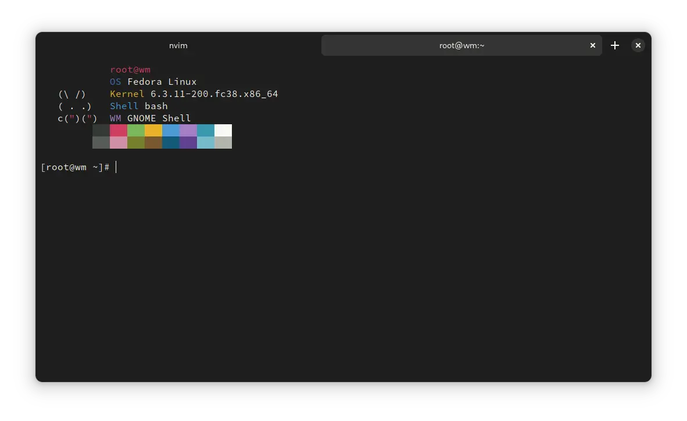

Portfólio
| Screenshot | Projeto |
|---|---|
|  |
Tasks.app — Tasks.app é um aplicativo web, em desenvolvimento, que tem como objetivo servir como uma alternativa ao Trello. Esse projeto está sendo desenvolvido como projeto extracurricular para a disciplina de JavaScript no Infnet. Confira o app funcionando aqui ou inspecione o código no GitHub. Esse projeto foi desenvolvido em TypeScript, utilizando as seguintes tecnologias: Nuxt.js, Drizzle ORM, Uno.css e Docker. |
|  |
BlackBox — Um emulador de terminal para o GNOME Desktop. Esse foi o primeiro projeto que eu publiquei ao mundo e hoje conta com mais de 170 mil downloads! Confira o projeto no GitLab. Esse projeto foi desenvolvido nas linguagens C e Vala. Conta também com estilizações em CSS. |